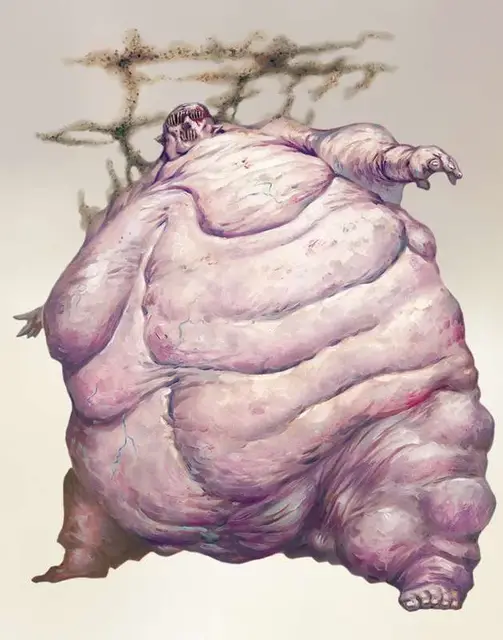

Нупперибо
Nupperibo
Среднее Исчадие (Дьявол), обычно законно-злое

Класс Доспеха 13 (природный доспех)
Хиты 11 (2к8 + 2)
Скорость 20 футов
| мод | спас | ||
|---|---|---|---|
| СИЛ | 16 | +3 | +3 |
| ЛОВ | 11 | +0 | +0 |
| ТЕЛ | 13 | +1 | +1 |
| мод | спас | ||
|---|---|---|---|
| ИНТ | 3 | −4 | −4 |
| МДР | 8 | −1 | −1 |
| ХАР | 1 | −5 | −5 |
Навыки Восприятие +1
Сопротивление урону кислота, холод
Иммунитет к урону огонь, яд
Иммунитет к состояниям ослепление, отравление, очарование, испуг
Чувства слепое зрение 20 футов (слеп за его пределами), пассивное Восприятие 11
Языки Инфернальный
Опасность 1/2 (100 опыта)
Бонус мастерства +2
Особенности
Языки. понимает Инфернальный, но не может говорить.
Облако вредителей. Каждое существо, отличное от дьявола, начинающее ход в пределах 20 фт. от нупперибо, должно совершить спасбросок Телосложения Сл 11 или получит 2 (1к4) урона кислотой. Если существо находится в двух и более подобных аурах, то спасбросок совершается с помехой.
Ведомый голодом. В Девяти Преисподнях нупперибо может чётко отслеживать любое существо, которое было поражено Облаком вредителей, в течение 24 часов.
Действия
Укус. Рукопашная атака оружием: +5 к попаданию, досягаемость 5 фт., одно существо. Попадание: 6 (1к6 + 3) колющего урона.
Описание
“Лемур выходит из Стикса, стирающего память, но зло, которое он совершил при жизни, остаются навечно запечатленными в его душе...
Но те, кому не хватало амбиций, не могут подняться по иерархической лестнице Преисподней. Вместо этого они опускаются в самый низ, становясь нупперибо".
- Морденкайнен
Ни одну душу не отвергнут в Девяти Преисподних, а самых жалких…тех, чьи злые деяния при жизни были хуже, чем чьи-либо ещё, из-за собственной небрежности и лени…ждала участь быть нупперибо. Эти ничтожные отребья бездумно волочатся по пустошам: слепые, распухшие из-за своего нескончаемого голода, и лопающие любую мерзость, до которых они, только, смогут достать.
По отдельности, нупперибо жалкие твари, но они редко ходят в одиночку и могут быть довольно опасными, если соберутся большой толпой. Они собираются вместе в одно скопление, способное препятствовать проходу через важнейшую тропинку, либо через целое ущелье. Их окружает рой жалящих насекомых, кровопийц и прочих паразитов, которые наводят страх и зловоние на всех существ, кроме дьяволов, проходящих мимо них.
Нупперибо не знают ничего, кроме голода, что движет ими в их слепом поиске за всем, что они смогут поглотить. Заметив что-то вкусненькое, нупперибо неустанно устремляется к своей жертве, пока либо не сожрёт его, либо не будет убит, либо если не встретит на своём пути другую более вкусную жертву, что привлечёт его внимание.
Не интересуясь ничем в своём существовании, кроме утоления своего голода, нупперибо бездумно повинуется любому приказу, что оно получит телепатическим путём от любого дьявола. Такое слепое послушание облегчает исполнение приказов в бою, однако их присутствие в рядах легионов армии отнюдь не возносит их до статуса генерала.